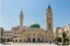
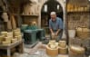
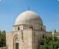
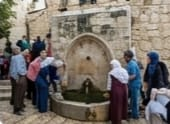
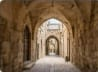
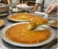
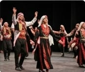
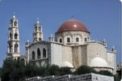

نابلس.. جبل النار وعروس جبال فلسطين
"رحلة عبر الزمن في أزقة البلدة جبال فلسطين."

الجامع الكبير وبرج الساعة
معلم ديني وأثري هام في قلب المدينة، يجمع بين فنون العمارة الإسلامية والتاريخ العريق.

سوق نابلس القديم
عبق التراث؛ رحلة عبر الزمن في أزقة البلدة القديمة، حيث تفوح روائح الصابون التقليدي والمأكولات الشعبية.
.jpeg)
قصة نابلس القديمة
مباني تاريخية متراصة تجسد العمارة الفلسطينية التقليدية والحياة الاجتماعية في الماضي.

مقام يوسف
رمز ديني وتاريخي؛ موقع مقدس ومزار هام، يروي حكايات الأنبياء ويعكس التسامح الديني في المدينة.
نابلس: إرثٌ حي ونبضٌ أصيل
"نأخذكم في رحلة بين أزقة دمشق الصغرى؛ لنستكشف عراقة البناء، وعذوبة المياه، وحلاوة المذاق التي جعلت من نابلس أيقونةً للتراث الفلسطيني الخالد."

عين بيت الماء في نابلس
مصدر مائي طبيعي وتاريخي، يعتبر جزءاً لا يتجزأ من تراث المدينة وحياتها اليومية.

البلدة القديمة
أسرار تاريخية؛ مباني تاريخية مخفية في أزقة البلدة القديمة، تروي قصصاً من العصور الماضية.

الكنافة النابلسية
فخر الحلويات؛ أكلة شعبية لذيذة ومشهورة عالمياً، تعتبر رمزاً للمدينة وكرم ضيافتها.

مهرجانات نابلس: احتفاء بالثقافة
فعاليات ثقافية وفنية تعكس غنى التراث النابلسي وتراث جبل النار.
نابلس الأبية: نسيجٌ من التاريخ والأصالة
" نأخذكم في جولة بين معالم جبل النار، حيث تلتقي الروحانية في كنائسها ومساجدها القديمة، بحيوية أسواقها العريقة التي تفيض بالحياة والكرم النابلسي الأصيل."
العيش المشترك في جبل النار
تجسد نابلس نموذجاً حياً للتآخي السلمي بين المسلمين والمسيحيين والطائفة السامرية؛ حيث تجتمع القلوب في ظل جبلَي عيبال وجرزيم لترسم لوحة من الانسجام الثقافي والاجتماعي.

كنيسة بئر يعقوب
موقع ديني وتاريخي فريد يضم البئر الذي شرب منه السيد المسيح؛ تعتبر الكنيسة تحفة معمارية تربط المدينة بقصص من العهد القديم والجديد، وتعد مقصداً للحجاج من كل مكان.

أهل نابلس: أصالة وجود
يشتهر أهل نابلس بحسن الضيافة والشهامة، وهم حراس التراث الذين حافظوا على هوية المدينة وعاداتها المتوارثة، معتزين بروحهم الوطنية وانتمائهم لدمشق الصغرى.

أسواق نابلس: عبق التجارة
تمتاز أسواق البلدة القديمة في نابلس بحيويتها الدائمة، حيث تفوح رائحة الصابون النابلسي والتوابل في أزقتها التاريخية التي تجمع بين كرم البيع وعراقة المكان.